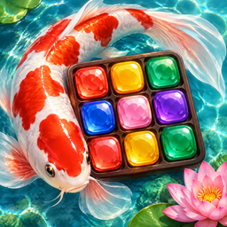

Koi Garden: Block Puzzle
A calm 9×9 block puzzle with koi
Drop blocks on a 9×9 board. Fill a row, a column or one of the nine 3×3 garden beds and the stones clear. There is no timer, so take your time.
- Hundreds of levels on a winding map, with something new in every chapter
- Restore ten overgrown gardens with the stars you earn
- Collect 53 koi and watch them swim in your own pond
- A new puzzle every day and one for the week, and a festival every week
- Big & clear mode, calm effects, colour-blind friendly stones, and it works offline
Free with fair ads: no ads in the middle of a round, and one purchase removes them for good.